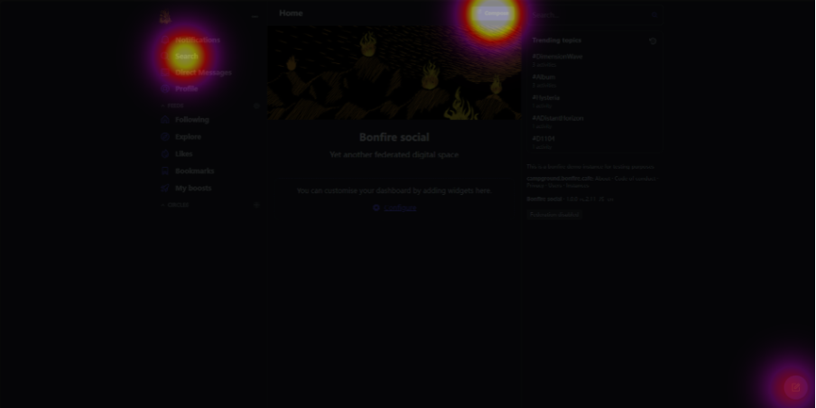
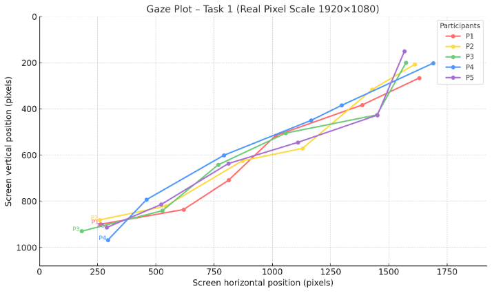

Register and like a post
Observed whether users could understand the account setup process and complete a basic engagement action.
UX Research / Usability Testing / Eye-tracking
A mixed-method usability evaluation of the Bonfire social platform, focused on understanding how users completed key tasks including registration, community discovery, and content posting.
Bonfire is a social platform evaluated through a mixed-method usability study. The project examined how users navigated the platform, understood key features, and completed essential tasks across registration, community discovery, and posting content.
My role focused on task scenario design, moderated usability testing support, behaviour observation, evaluation synthesis, and translating usability issues into actionable UX recommendations.

The evaluation was designed to identify usability issues affecting task completion, navigation clarity, feedback visibility, and feature discoverability.
Observed whether users could understand the account setup process and complete a basic engagement action.
Tested whether users could locate community-related features and understand how to interact with them.
Evaluated whether users could understand the posting flow and recognise system feedback after completing an action.

Users had difficulty understanding where to go next during core task flows, which reduced confidence and increased unnecessary exploration.
Some actions did not provide clear confirmation, leaving users unsure whether the system had responded successfully.
Important functions were not visually prominent enough, making community discovery and posting tasks harder than expected.
Based on the evaluation, the project delivered eight actionable UX recommendations focused on improving navigation, task flow clarity, visual feedback, and feature discoverability.
Reflection
By combining moderated usability testing, eye-tracking, Lyssna testing, heuristic evaluation, and cognitive walkthrough, I learned how different forms of evidence can support a more complete understanding of usability problems.